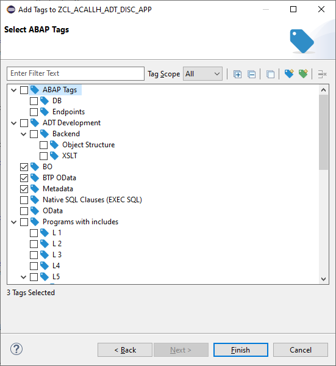
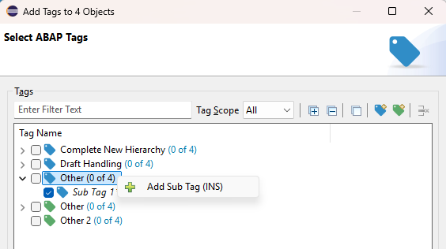

On this page you select the Tags which you want to assign to your selected Repository objects.

You can also create new Global or new User Tags directly on this page, without creating them first in the Tag Manager View. This includes hierarchical tags.

| Shortcut | Function |
|---|---|
Ctrl+F |
Jump to the filter field |
| Ctrl + → | Expand All |
| Ctrl + ← | Collapse All |
| Ctrl + + | New Global Tag |
| Ctrl + Shift + + | New User Tag |
| DEL | Delete Tag (only possible for not yet persisted Tags) |